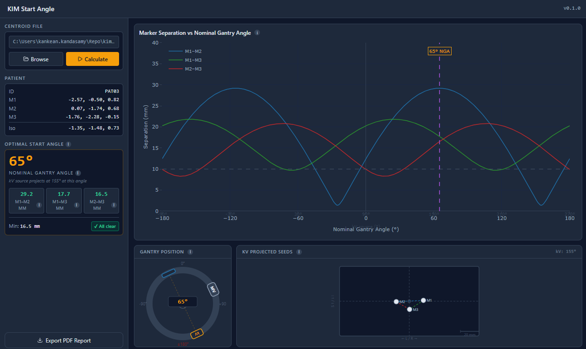

kV intrafraction monitoring · Elekta
Find the optimal gantry start angle.
KIM Start Angle reads a patient's planning-CT centroid file and computes the Elekta gantry angle that keeps all three prostate fiducials separated on the kV imager at beam-on.
Windows 10 / 11 · 64-bit · standalone .exe · no install required

How it works
Centroid file to gantry angle.
Each marker is projected into the kV beam's-eye view by pure rotation and evaluated across the full gantry arc. The geometry follows the original MATLAB reference script.
01
Read the centroid
Load the Centroid.txt file exported from planning. Three fiducial markers plus the isocentre, converted to IEC millimetres.
02
Sweep every angle
Each marker is rotated into the kV plane at all 361 nominal gantry angles; pairwise separations are computed continuously.
03
Pick the optimum
The angle with the largest total separation where all three pairs stay at or above 10 mm. Shown with a separation chart, a gantry widget and a live detector view.
Download
Latest release
This page reads the most recent published release from GitHub.
Loading the latest release from GitHub.
Site commissioning required before clinical use
This tool uses a simplified pure-rotation projection model — no source-to-detector distance, pixel geometry, or imager-sag corrections. The recommended angle is a geometric prediction. Before using results clinically, a qualified medical physicist must verify, at each site, that:
- the separation values and seed positions shown match the actual fiducial positions in the kV frames KIM acquires at that nominal gantry angle;
- the angle convention (NGA 0° = MV source up; kV source = NGA + 90°) matches the linac's displayed gantry angle;
- the predicted optimal angle produces acceptable KIM tracking in practice.
Requirements
Windows 10 or 11, no install.
| Operating system | Windows 10 / 11, 64-bitMicrosoft Edge WebView2 runtime (preinstalled on current Windows). |
|---|---|
| Install | NoneSingle portable executable. Download and run. |
| Input | Centroid.txtThree fiducial markers and the isocentre, exported from the planning system in cm. |